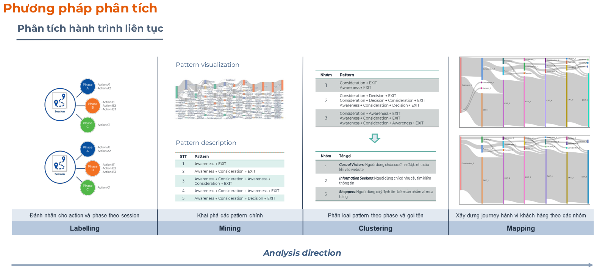
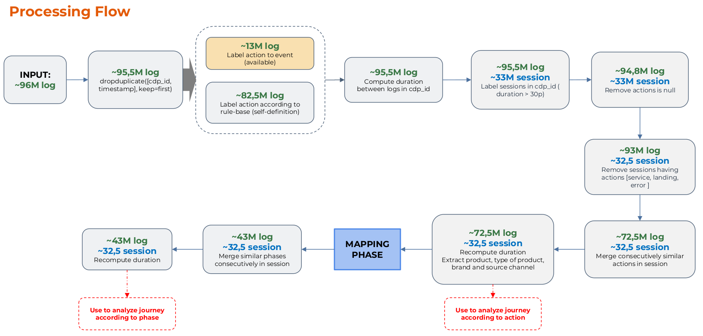
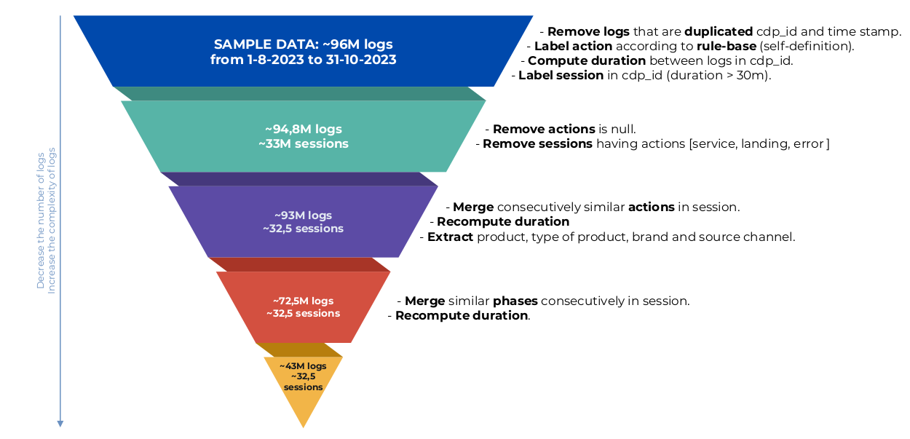
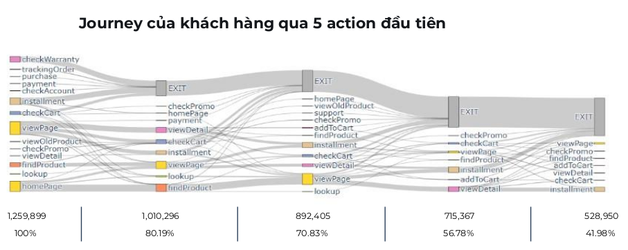
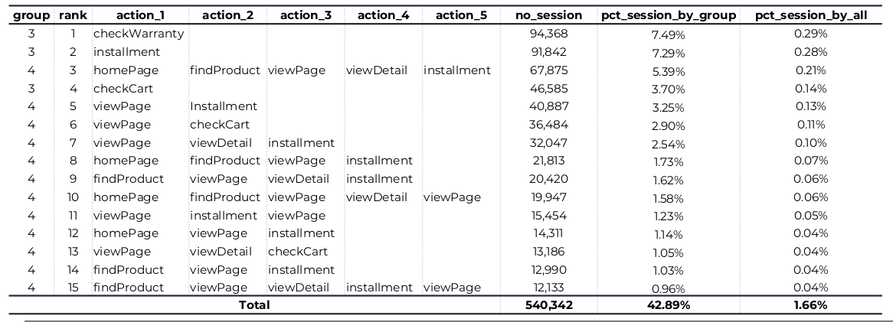
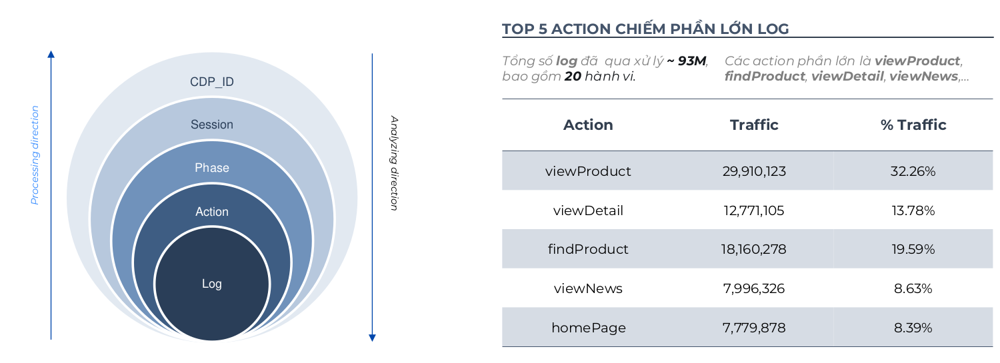
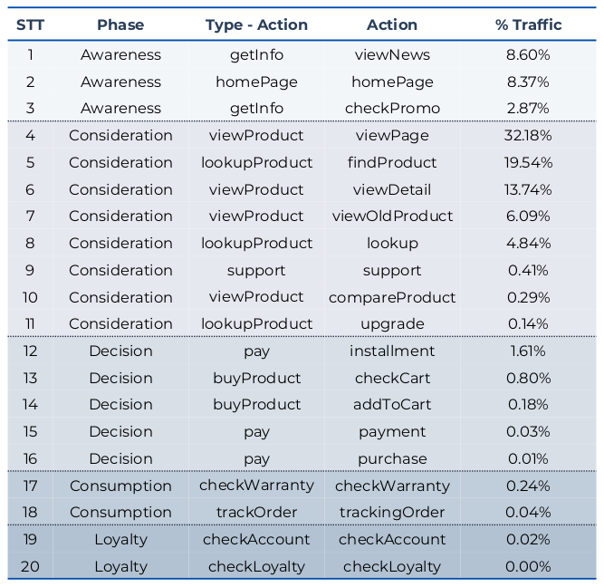

Log Web Analysis
Web log analysis project for customer behavior modeling, path analysis, and interaction insights to support business decision-making.
Note: This is a summary from the internal report for the project: Web Behavior Analytics. It was done at CADS - FPT Corporation.
Raw web logs for this analysis were collected from https://fptshop.com.vn/.
Visuals







Project Overview
Conducted an end-to-end web behavior analytics project for a large-scale e-commerce platform to understand customer intent, identify drop-off behavior, and propose real-time personalization opportunities.
The project combined market research, clickstream analysis, customer journey mapping, behavioral segmentation, and exit-intent prediction. The analysis was based on approximately 96M raw web behavior logs collected over a 3-month period and transformed into structured user journeys for session-level analysis and predictive use cases.
Business Context
The project focused on three questions:
- Which users are likely to purchase?
- Which users are likely to leave without converting?
- What real-time action should be triggered based on user intent?
Target business applications included:
- In-session purchase intent prediction and exit-risk detection.
- Channel, campaign, and category conversion diagnostics.
- Personalized offers, exit popups, cross-sell, upsell, and recommendation triggers.
- Selective intervention instead of broad promotions to protect margin.
- Journey-driven UX and navigation improvements.
My Contribution
- Reviewed market research and case studies on clickstream analytics, in-session marketing, and exit-intent prediction.
- Defined analytics directions for conversion analysis, recommendation, UX optimization, and intervention strategy.
- Processed approximately 96M raw logs into around 93M valid labeled logs and approximately 32.5M valid sessions.
- Designed a rule-based action-labeling framework mapping raw URLs/events into 20 meaningful user actions.
- Built journey mapping from
log -> action -> phase -> sessionwith 5 customer journey phases. - Segmented sessions into Information Seekers, Product Explorers, and Shoppers.
- Built and evaluated a rule-based exit-intent prediction approach and compared against a random baseline.
Methodology
1. Web Behavior Research
- Conversion optimization: predict purchase likelihood.
- Recommendation opportunities: next-best product/content, cross-sell, and upsell.
- Clickstream UX analysis: detect interest points, drop-off points, and friction.
2. Data Cleaning and Preprocessing
- Removed duplicates, invalid/error/service/irrelevant logs, and unclassified actions.
- Computed action-level time gaps and rebuilt sessions using inactivity thresholds.
- Recomputed session/action durations and extracted product, source, and campaign fields.
- Reduced approximately 96M raw logs to around 93M valid logs and approximately 32.5M valid sessions.
3. Action Labeling
Mapped URLs and events into 20 behavioral actions, including:
- Homepage visit, product search, listing view, detail view, promotion check.
- Cart check, add-to-cart, installment view, payment, purchase.
- Warranty check, order tracking, and account check.
4. Journey Mapping
Structured the customer journey as log -> action -> phase -> session with 5 phases:
- Awareness: information/promotion/homepage discovery.
- Consideration: search, browse, compare, and product-detail interactions.
- Decision: cart, installment, payment, and purchase-related intent.
- Consumption: post-purchase actions such as warranty and order status.
- Loyalty: account or loyalty-related interactions.
5. Behavioral Segmentation
- Information Seekers: 25.04% of traffic, short engagement, low conversion potential.
- Product Explorers: 69.65% of traffic, strongest conversion opportunity pool.
- Shoppers: 3.87% of traffic, strongest purchase-intent signals.
6. Exit-Intent Prediction
- Built historical journey/exit patterns and generated step-level session records.
- Predicted exit likelihood at each step and compared against random baseline.
- Scale: approximately 32.5M sessions, 32.2M training sessions, 325K testing sessions.
- Patterns/evaluation: 3M exit patterns and 924K evaluated steps from 325K test sessions.
Key Insights
- Only around 2.8% of approximately 32.5M valid sessions showed purchase-related behavior.
- Most purchase-related actions happened between the 2nd and 5th action in a session.
- More than 90% of sessions lasted 0-5 minutes, requiring early intervention.
- More than 50% of average page dwell time was 0-15 seconds; around 90% under 3 minutes.
- Traffic peaks were 9-11, 14-16, and 19-21, contributing approximately 54% of traffic.
- Consideration phase dominated at 77.23% of traffic; Decision phase was 2.62%.
- Product interest was concentrated in smartphones (approximately 58%) and laptops (approximately 24%).
- Sessions with 1-5 product views represented 98.7% of product-viewing sessions.
- Search contributed nearly 50% of first-session entries; direct was around 20%.
- Average total session duration: Shoppers 297s, Product Explorers 98s, Information Seekers 0.9s.
- Sessions with 2-5 phases accounted for 70.8% of purchase sessions.
- Sessions with 6+ phases had the highest purchase-session rate at 58.33%.
Exit-Intent Prediction Results
Step-Level Evaluation
- Rule-based precision: 62.9%
- Rule-based recall: 58.9%
- Rule-based F1-score: 60.8%
- Random baseline precision: 35.2%
- Random baseline recall: 50.0%
- Random baseline F1-score: 41.3%
Session-Level Evaluation
- Rule-based precision: 68.3%
- Rule-based recall: 65.6%
- Rule-based F1-score: 66.9%
- Random baseline precision: 46.4%
- Random baseline recall: 50.0%
- Random baseline F1-score: 48.1%
Stability Check
The rule-based method produced similar performance on two sample sets, with differences below approximately 1.1%, indicating stable behavior across test samples.
Business Recommendations
- Prioritize intervention in the first 0-5 minutes of each session.
- Use early high-intent signals as triggers: search, repeated product detail views, cart/payment-related actions.
- Focus efforts on Product Explorers and Shoppers instead of broad untargeted promotion.
- Segment by purchase probability: low, medium, high, then align intervention intensity to each segment.
- Use exit-intent triggers for popup, reminder, recommendation, social proof, and navigation support.
- Schedule campaign testing around peak windows: 9-11, 14-16, and 19-21.
- Combine session behavior with historical customer activity for stronger intent prediction.
- Use clickstream journey analytics to reduce friction in navigation, content placement, and checkout flow.